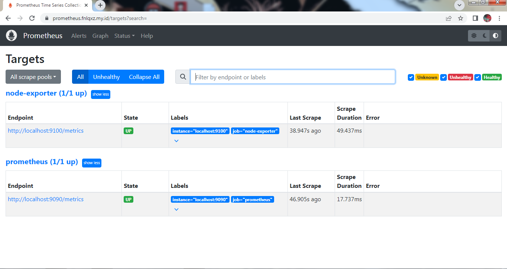

Install grafana dan prometheus + prometheus node exporter
Download file
Bikin user, usergroup
Bikin user dengan usergroup dengan nama prometheus
sudo groupadd --system prometheus sudo useradd --system -s /sbin/login -g prometheus prometheus
Install prometheus
Ekstrak file yang udah di download
tar xvf prometheus-2.54.1.linux-amd64.tar.gz
Masuk ke direktori prometheus, terus pindahin filenya
cd prometheus-2.54.1.linux-amd64 sudo mv prometheus promtool /usr/local/bin sudo chown -R root:root /usr/local/bin/prometheus sudo chown -R root:root /usr/local/bin/promtool
Bikin direktori, /etc/prometheus
sudo mkdir /etc/prometheus
Bikin direktori, /var/lib/prometheus
sudo mkdir /var/lib/prometheus
Rubah ownership direktori, /var/lib/prometheus
sudo chown -R prometheus:prometheus /var/lib/prometheus
Cek:
root@nasigor:~# ls -l /var/lib | grep prometheus drwxr-xr-x 9 prometheus prometheus 4096 Sep 28 22:00 prometheus
Pindahin file-file ke direktori, /etc/prometheus
sudo mv consoles/ console_libraries/ prometheus.yml /etc/prometheus
Masuk direktori, /etc/prometheus
root@nasigor:~# cd /etc/prometheus/ root@nasigor:/etc/prometheus# ls -la total 16 drwxr-xr-x 4 root root 69 Sep 28 08:21 . drwxr-xr-x 88 root root 8192 Sep 28 08:28 .. drwxr-xr-x 2 root root 38 Aug 27 18:11 console_libraries drwxr-xr-x 2 root root 173 Aug 27 18:11 consoles -rw-r--r-- 1 root root 755 Sep 28 08:21 prometheus.yml
Rubah file config
Rubah aja jadi kek gini, ikutin:
# my global config global: scrape_interval: 15s # Set the scrape interval to every 15 seconds. Default is every 1 minute. evaluation_interval: 15s # Evaluate rules every 15 seconds. The default is every 1 minute. # A scrape configuration containing exactly one endpoint to scrape: # Here it's Prometheus itself. scrape_configs: # The job name is added as a label `job=` to any timeseries scraped from this config. - job_name: "prometheus" # metrics_path defaults to '/metrics' # scheme defaults to 'http'. static_configs: - targets: ["localhost:9090"]
prometheus config, prometheus.yml, ketik sudo nano prometheus.yml
# my global config global: scrape_interval: 15s # Set the scrape interval to every 15 seconds. Default is every 1 minute. evaluation_interval: 15s # Evaluate rules every 15 seconds. The default is every 1 minute. # A scrape configuration containing exactly one endpoint to scrape: # Here it's Prometheus itself. scrape_configs: # The job name is added as a label `job=` to any timeseries scraped from this config. - job_name: "prometheus" # metrics_path defaults to '/metrics' # scheme defaults to 'http'. static_configs: - targets: ["localhost:9090"]
Bikin file service prometheus
sudo nano /etc/systemd/system/prometheus.service
Isi:
[Unit] Description=Prometheus Documentation=https://prometheus.io/docs/introduction/overview/ Wants=network-online.target After=network-online.target [Service] User=prometheus Group=prometheus Type=simple ExecStart=/usr/local/bin/prometheus \ --config.file /etc/prometheus/prometheus.yml \ --storage.tsdb.path /var/lib/prometheus/ \ --web.console.templates=/etc/prometheus/consoles \ --web.console.libraries=/etc/prometheus/console_libraries [Install] WantedBy=multi-user.target
Enable servicenya
sudo systemctl enable --now prometheus.service
Cek servicenya, kalo udah jalan ga ada error biasanya kek gini:
● prometheus.service - Prometheus
Loaded: loaded (]8;;file://nasigor.eng/etc/systemd/system/prometheus.service/etc/systemd/system/prometheus.service]8;;; enabled; preset: enabled)
Active: active (running) since Sat 2024-09-28 08:21:47 WIB; 14h ago
Docs: ]8;;https://prometheus.io/docs/introduction/overview/https://prometheus.io/docs/introduction/overview/]8;;
Main PID: 124623 (prometheus)
Tasks: 7 (limit: 1081)
Memory: 71.4M
CPU: 1min 57.991s
CGroup: /system.slice/prometheus.service
Prometheus jalan di port 9090
root@nasigor:/etc/prometheus# lsof -n -i | grep prometheus prometheu 124623 prometheus 7u IPv6 687398 0t0 TCP *:9090 (LISTEN) prometheu 124623 prometheus 11u IPv6 687441 0t0 TCP [::1]:53220->[::1]:9090 (ESTABLISHED) prometheu 124623 prometheus 12u IPv6 687442 0t0 TCP [::1]:9090->[::1]:53220 (ESTABLISHED) prometheu 124623 prometheus 13u IPv6 687495 0t0 TCP [::1]:50272->[::1]:9100 (ESTABLISHED) prometheu 124623 prometheus 15u IPv6 796577 0t0 TCP 103.74.5.26:9090->103.74.5.26:39190 (ESTABLISHED) prometheu 124623 prometheus 18u IPv6 796587 0t0 TCP 103.74.5.26:9090->103.74.5.26:39204 (ESTABLISHED)
Berarti udah berhasil install prometheusnya, bisa di cek di alamat_ip:9090 di browser
Install prometheus node exporter
Ekstrak file
tar xvf node_exporter-1.8.2.linux-amd64.tar.gz
Masuk ke direktori
cd node_exporter-1.8.2.linux-amd64
Pindahin filenya
sudo mv node_exporter /usr/local/bin
Bikin file service node_exporter
sudo nano /etc/systemd/system/node-exporter.service
Isi:
[Unit] Description=Prometheus exporter for machine metrics [Service] Restart=always User=prometheus ExecStart=/usr/local/bin/node_exporter ExecReload=/bin/kill -HUP $MAINPID TimeoutStop=20s SendSIGKILL=no [Install] WantedBy=multi-user.target
Enable servicenya
systemctl enable --now node-exporter.service
Kalo ga ada error, hasilnya kek gini
● node-exporter.service - Prometheus exporter for machine metrics
Loaded: loaded (]8;;file://nasigor.eng/etc/systemd/system/node-exporter.service/etc/systemd/system/node-exporter.service]8;;; enabled; preset: enabled)
Active: active (running) since Sat 2024-09-28 08:17:26 WIB; 14h ago
Main PID: 124463 (node_exporter)
Tasks: 5 (limit: 1081)
Memory: 18.7M
CPU: 2min 33.582s
CGroup: /system.slice/node-exporter.service
└─124463 /usr/local/bin/node_exporter
Prometheus node exporter, jalan di port 9100
root@nasigor:/etc/prometheus# lsof -n -i | grep node node_expo 124463 prometheus 3u IPv6 685767 0t0 TCP *:9100 (LISTEN) node_expo 124463 prometheus 7u IPv6 687496 0t0 TCP [::1]:9100->[::1]:50272 (ESTABLISHED) node_expo 124463 prometheus 8u IPv6 796538 0t0 TCP 103.74.5.26:9100->103.74.5.26:45486 (ESTABLISHED) node_expo 124463 prometheus 9u IPv6 797412 0t0 TCP 103.74.5.26:9100->103.74.5.26:36232 (ESTABLISHED)
Bisa di cek di browser alamat_ip:9100
Edit file prometheus.yml
sudo nano /etc/prometheus/prometheus.yml
File confignya kek gini, ikutin aja
# my global config global: scrape_interval: 15s # Set the scrape interval to every 15 seconds. Default is every 1 minute. evaluation_interval: 15s # Evaluate rules every 15 seconds. The default is every 1 minute. # A scrape configuration containing exactly one endpoint to scrape: # Here it's Prometheus itself. scrape_configs: # The job name is added as a label `job=` to any timeseries scraped from this config. - job_name: "prometheus" # metrics_path defaults to '/metrics' # scheme defaults to 'http'. static_configs: - targets: ["localhost:9090"] - job_name: "node-exporter" # metrics_path defaults to '/metrics' # scheme defaults to 'http'. static_configs: - targets: ["localhost:9100"]
Abis itu restart service prometheus
sudo systemctl restart prometheus
Dengan catatan, pastiin ga ada error dan servicenya tetep active dan running
Hasilnya nanti kek gini

Install grafana
Tutorialnya ada di sini
Abis itu enable servicenya
sudo systemctl enable --now grafana-server.service
Pastiin ga ada error
Grafana jalan di port 3000, alamat_ip:3000